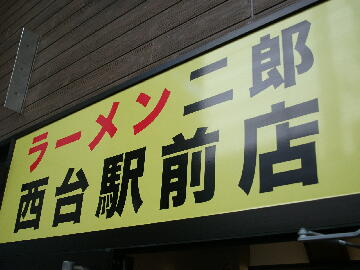
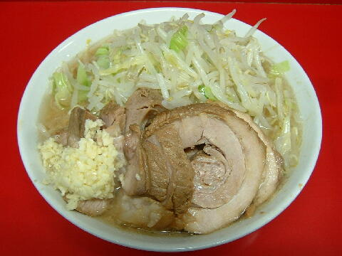

板橋区 蓮根 3-9-7
日・祝
11：00〜13：30 17：30〜21：30
水 11：00〜14：00
土 9：30〜12：30

ラーメン小 750円
ラーメン大 830円
ラーメン少なめ 750円
ラーメン半分 730円
ラーメンミニ 650円
豚増し 150円
青ネギ 100円、白ネギ 100円、玉子 50円、うずら 100円、ショウガ 100円
缶ビール 300円、缶チューハイ 200円
店員は、お客の扱いが上手いヒロシ店主と助手。
コショウ、一味、大粒で激辛のトウガラシ、醤油ダレ。
レンゲ無。ティッシュ無。名刺無。
BGMは、超低音量の軽音楽。
トッピングは、二郎標準。
ラーメン二郎 西台駅前店 西台駅前店のTwitter
「ラーメン二郎 西台」でヤフー検索
「ラーメン二郎 西台」でヤフーリアルタイム検索
「ラーメン二郎 西台」でグーグル検索

ラーメン小 豚増し ニンニク
麺は、柔らかめの方向に向いている直系二郎の麺。白くて細め。量は二郎標準よりやや少なめ。
ぶたは、ブランド豚。柔らかくて旨い。
いなか豚と口どけの良い脂が特徴のイタリア産ドルチェパポルコを使用している。
スープは、二郎専用しょうゆで食わせる非乳化アッサリ系でブランド豚の出汁の旨味がたっぷり。
ヤサイは、モヤシ8：キャベツ2の割合。ベストな茹で上がり。
ニンニクは、中粒に刻まれたニンニク。
ＰＣ店